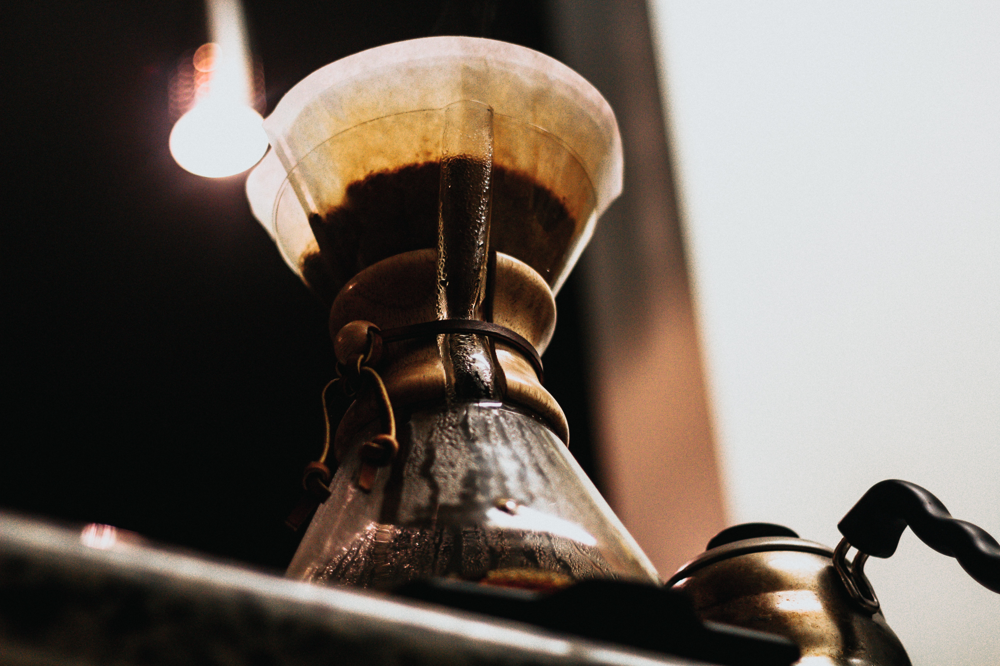

手沖後濾紙上的粉牆被認定為一個評斷技術的指標，不同流派求的都是能有完美風味的咖啡，萃取度適中且平衡是共同目標，如何在沖煮的過程中使用不同的擾動方式有效萃取而達到好的口感各有說法，然而完整的粉牆代表著水流力道的穩定控制，有著一定厚度的粉牆能讓注入的熱水不會太快流出，在停留的過程中與咖啡粉作用達到萃取效果，掌握流速可以建構優雅弧度的萃取曲線。
均勻分布的粉牆則訴說萃取的平衡，代表著不同區塊的咖啡粉有同等程度的萃取，若是粉牆有厚有薄，在薄的區域可能因為粉量少造成萃取過度，厚的區域則萃取不足，整杯喝起來口感混雜，粉牆的構築不僅僅是一項藝術表現，沖出厚度均勻漂亮的粉牆不僅能增添成就感也是整個手沖過程的成果展現。
要如何讓粉牆形成從準備工作就要開始注意，首先是咖啡粉的顆粒不宜過粗，粉牆的形成是藉由粉與粉之間水的黏滯力被固定，若是粉末顆粒過大容易造成這個重力結構平衡被破壞。其次是濾紙必須要服貼，放進濾杯前可以先沿邊折一下再攤開，接著淋熱水，除了溫杯外也可以讓濾紙吸附在杯上。粉末倒入後稍微整平，讓整體先在一個均勻的狀態。
有了穩定的起始點後要開始調整心態，讓專注力進入一個平靜狀態，期望的成果是一片從底部持續到頂部的均勻粉 牆，如同這個期許求的是從頭到尾的平穩，切實控制每一階段的水流，否則很容易到了中後段產生力道失控的狀態 而功虧一簣，一個小缺失就能導致沖刷厚度的不均。
接下來關鍵就是注水的方式。第一次注水約20秒，以中心繞圈為主，注水力道控制在可以拱起粉層的狀態，讓粉層達到濾杯八分滿的高度，若是力道太小會不夠力讓粉層拱起，造成水壓在上層的狀況，若是力道太大會從中心區域滿溢開，整體結構直接被打散，因此粉層的升起是力道控制的參考基準。繞圈的速度則是使其產生小水流，若是轉速過慢水會直接向下流去，容易造成吃水不均。

接下來約半分鐘減少注水量，開始在外圍繞圈鞏固粉牆，力道均衡的水柱可以將粉末向下推穩，讓粉牆結構更加 穩固，同時保持水位使達到表面張力，由於這時注水朝向邊緣靠近，要小心不過度用力而推垮粉牆。
最後約一分鐘的持續萃取，淺焙繞圈範圍小、深焙以外圍為主，記得保留離杯緣約0.3-0.4公分的距離以免將粉牆直接打掉，若是水流過強會造成過度擾動，使粉床不平整，而造成萃取的不均勻，以慢速達成最後的萃取。

當然不同流派有不同的沖法，也有達成效果的一套理論，不需全神貫注的去建造粉牆，這只是沖煮技巧上一個注水 力道與時間控制的基礎參考，要沖出好咖啡還是得由各項變因去探討，再搭配手法促使一杯好咖啡的形成。